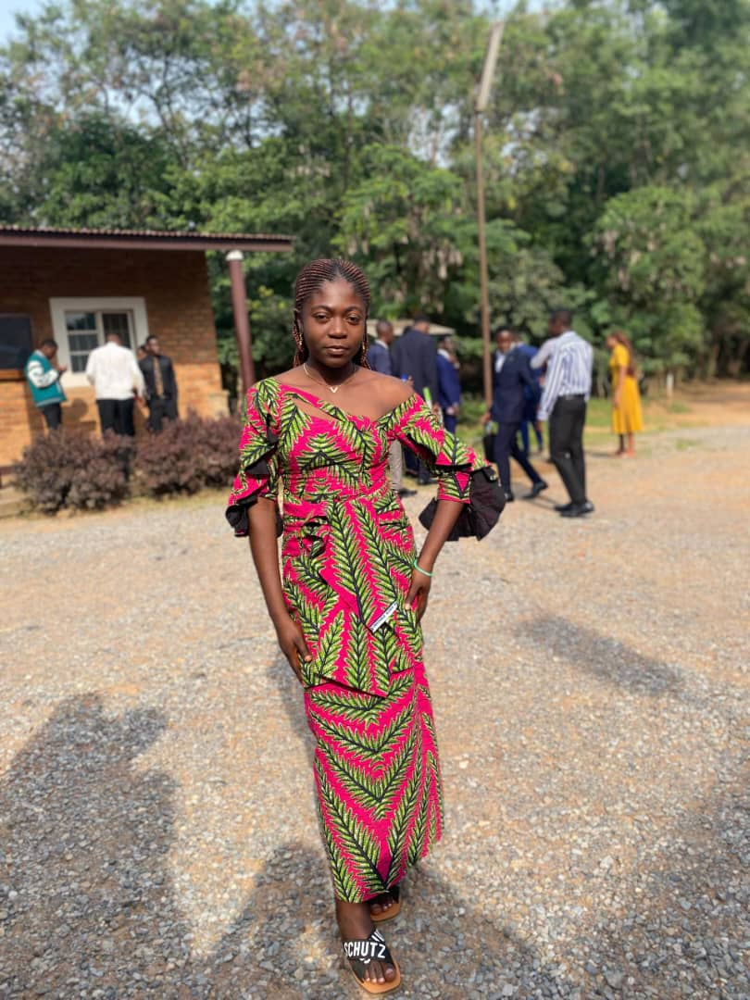

A Propos de moi
Bonjouur ! je m'appelle katy KASONGO et j'suis etudiante dynamique et motivé en informatique à l'UDBL .Passionné par le developpement web,l'intelligence artificielle,et le design graphique,je suis constament à la recherche de nouvelles opportunités d'apprentissage et de défis stimulants.
Au cours de mes études,j'ai développé de solides compétences en programmation. je suis une personnne rigoureuse,créative et j'aime travailler en équipe pour atteindre mes objectifs communs.Mon objectif est de contribuer à des projets innovants , trouver un stage,et maitriser le Framework laraval.
Mes competences
COMPETENCES
NIVEAU